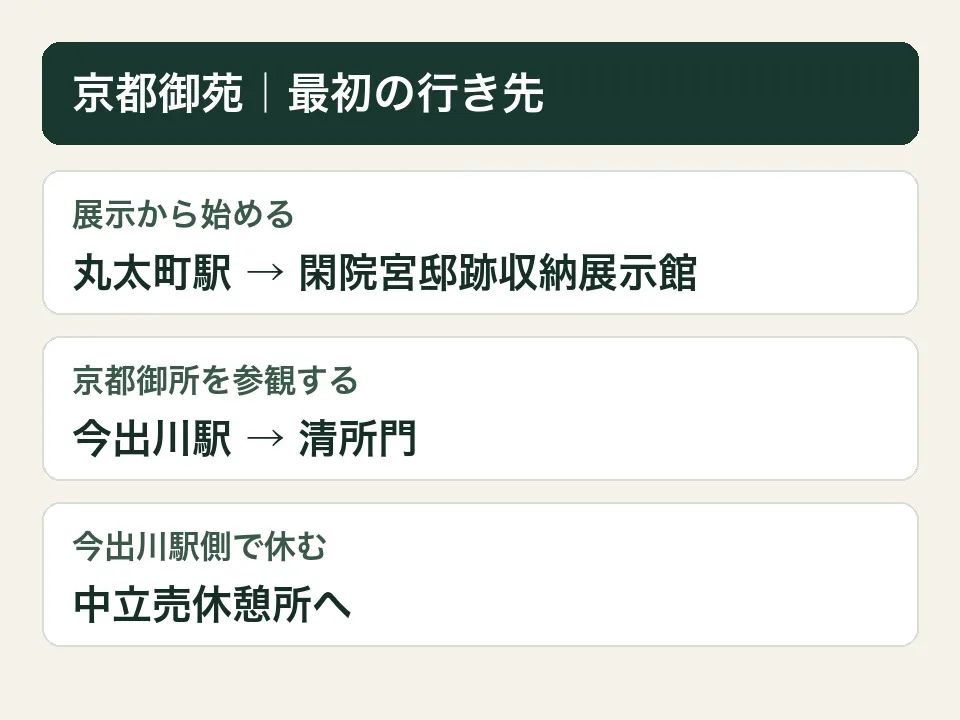

京都御苑の散策コースは、閑院宮邸跡収納展示館を先に見たいなら丸太町駅から、京都御所を先に参観したいなら今出川駅から歩くと組み立てやすくなります。京都御苑への入苑は24時間無料で、展示館と京都御所の通常見学も無料です。2026年11月25日時点の環境省と宮内庁の案内から、目的別に入口と歩く順番を選びます。
01最寄り駅は丸太町と今出川のどちら？
出発駅を決める前に、地図の目的地を「京都御苑」から、最初に見たい施設の名前に変えてみてください。環境省は、苑の南部にある閑院宮邸跡と御所参観受付で、それぞれ別の駅を案内しています。最初に寄る場所から逆算して駅を選ぶと、苑内の往復を減らしやすくなります。
| 最初に行く場所 | 環境省の案内 | 到着後の目印 |
|---|---|---|
| 閑院宮邸跡収納展示館 | 丸太町駅1番出口から徒歩5分 | 苑の南部 |
| 閑院宮邸跡方面へエレベーターを使う | 丸太町駅5番出口から徒歩10分 | 苑の南部 |
| 京都御所の参観受付・中立売休憩所方面 | 今出川駅3番出口から徒歩5分。エレベーターあり | 京都御所へ入る場合は清所門 |
徒歩時間は環境省のアクセス案内にある目安です。異なる施設への行き方を示した数字なので、同じ地点までの速さを比べるためには使えません。休憩所を待ち合わせに使う場合は、集合の連絡にも「中立売休憩所」と施設名を入れておくと合流しやすくなります。

02丸太町から展示と外周の門を歩く
閑院宮邸跡収納展示館の開館時間は9:00〜16:30です。通常は月曜と年末年始が休館で、月曜が祝日の場合は開館と環境省が案内しています。南から歩くなら、時間の決まっている展示を先に見て、次に苑の外周の門へ向かうと、見学後に自分のペースで歩けます。
外周で歴史に触れるなら、南側の堺町御門や西側の蛤御門が目印です。環境省は堺町御門を祭りの行列が市中へ出る門、蛤御門を幕末の禁門ノ変の激戦地として紹介しています。屋内見学の後に外周の門を選ぶと、時間や体力に合わせて散策の範囲を決められます。足を休めたいなら、西側の中立売休憩所には無料の休憩スペースがあります。

写真の原版はSaigen Jiro撮影の 京都御苑 蛤御門 です。CC0 1.0 で提供されています。

03今出川から京都御所を参観する
京都御所の通常参観は、事前申込不要で入場無料です。入場口は清所門で、入場時に手荷物検査があります。苑の外周の門をくぐった後も、目的地は清所門に設定しておくと迷いにくくなります。スーツケースなどの大型の荷物は持ち込めないため、移動日なら荷物をどうするか先に決めてください。場内の足元は砂利です。
御所に入るなら宮内庁のカレンダーを先に確認しましょう。月曜が祝日の場合、御所はその翌日が休止です。展示館と御所では月曜の扱いが異なるため、両方に行きたい日はそれぞれの案内を開いてください。京都御所の参観カレンダー、展示館の利用案内。
04休館日や時間が短い日の散策コース
展示館や御所の見学を入れられない日は、苑を歩いて外周の門を見て回るコースに切り替えられます。たとえば南側で堺町御門を見て、西側の蛤御門へ向かいます。歩ける時間が短ければ、先に見たい門を決め、帰りに使う駅も合わせて地図で確認すると予定を立てやすくなります。
ポイント京都御苑の入苑、展示館の通常入場、京都御所の通常参観は公式案内でいずれも無料です。掲載コースの見学料に割引券は不要です。交通費や飲食費は旅程に合わせて別に考えてください。
駅と門を組み合わせる都心の散策なら、神戸・三宮の東遊園地への歩き方も参考にできます。
05よくある質問
京都御苑は何時まで散策できますか？
毎日24時間開苑しています。展示館と京都御所は、それぞれの開館・公開条件を確認してください。
京都御所は予約なしで入れますか？
通常公開は事前申込不要です。休止日をカレンダーで確認し、清所門へ向かってください。
丸太町駅はどの出口から出ますか？
環境省の案内では1番出口です。エレベーターを使う場合は5番出口から行けます。
06まとめ
- 展示を先に見たい日は丸太町駅から、御所を先に参観したい日は今出川駅から歩きます。
- 御所に入る日は清所門と公開日を確認し、大型の荷物はあらかじめ預け先を考えておきます。
- 見学施設が使えない日も、堺町御門や蛤御門を目印に苑内を散策できます。